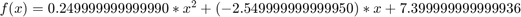
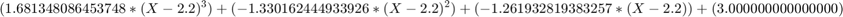
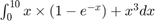

Contents
Métodos Numéricos e Otimização não Linear
Teste Tipo: Prático-Laboratorial
format long
Questão 1
x_inicial = [0 0.1]; options = optimset('TolX',0.01,'TolFun',0.1); [x, fval, exitflag, output] = fsolve(@equation_1, x_inicial, options)
Equation solved.
fsolve completed because the vector of function values is near zero
as measured by the value of the function tolerance, and
the problem appears regular as measured by the gradient.
x =
0.202868440507818 1.149731058980664
fval =
-0.001169979890327 -0.005376496458623
exitflag =
1
output =
struct with fields:
iterations: 2
funcCount: 9
algorithm: 'trust-region-dogleg'
firstorderopt: 0.023555167275796
message: '↵Equation solved.↵↵fsolve completed because the vector of function values is near zero↵as measured by the value of the function tolerance, and↵the problem appears regular as measured by the gradient.↵↵<stopping criteria details>↵↵Equation solved. The sum of squared function values, r = 3.027557e-05, is less than↵sqrt(options.FunctionTolerance) = 3.162278e-01. The relative norm of the gradient of r,↵2.355517e-02, is less than options.OptimalityTolerance = 1.000000e-01.↵↵'
Questão 2
x_inicial = 0.04;
options = optimset('TolX', 0.1);
[x, fval, exitflag, output] = fsolve(@equation_2, x_inicial, options)
Equation solved.
fsolve completed because the vector of function values is near zero
as measured by the value of the function tolerance, and
the problem appears regular as measured by the gradient.
x =
0.040954076659222
fval =
3.565524764326256e-09
exitflag =
1
output =
struct with fields:
iterations: 2
funcCount: 6
algorithm: 'trust-region-dogleg'
firstorderopt: 1.925665159690314e-07
message: '↵Equation solved.↵↵fsolve completed because the vector of function values is near zero↵as measured by the value of the function tolerance, and↵the problem appears regular as measured by the gradient.↵↵<stopping criteria details>↵↵Equation solved. The sum of squared function values, r = 1.271297e-17, is less than↵sqrt(options.FunctionTolerance) = 1.000000e-03. The relative norm of the gradient of r,↵1.925665e-07, is less than options.OptimalityTolerance = 1.000000e-06.↵↵'
Questão 3
% | $x_i$ | 1.5 | 2.0 | 2.2 | 3.0 | 3.8 | 4.0 | % |----------|-----|-----|-----|-----|------|-----| % | $f(x_i)$ | 4.9 | 3.3 | 3.0 | 2.0 | 1.75 | 1.5 | xi = [1.5 2.0 2.2 3.0 3.8 4.0]; f_xi = [4.9 3.3 3.0 2.0 1.75 1.5]; % escolhemos os 3 pontos mais próximos est_grau_2 = polyfit(xi(2:4), f_xi(2:4), 2);
a)
x = 2.8; polyval(est_grau_2, x)
ans = 2.220000000000000
b)
est_grau_2
est_grau_2 = 0.249999999999989 -2.549999999999944 7.399999999999927

c)
x = 2.5; spline(xi, [-2 f_xi 3], x)
ans = 2.547101932475221
d)
est_cubica = spline(xi, [-2 f_xi 3]); est_cubica.coefs
ans = Columns 1 through 3 8.631332599118954 -6.715666299559479 -2.000000000000000 -12.602491740088112 6.231332599118951 -2.242166850220264 1.681348086453748 -1.330162444933926 -1.261932819383257 -3.616490569933921 2.705072962555068 -0.162004405286345 68.061261013215741 -5.974504405286346 -2.777549559471363 Column 4 4.900000000000000 3.300000000000000 3.000000000000000 2.000000000000000 1.750000000000000
excluindo o terceiro segmento (terceira linha) $
Questão 4
t = [0 10 15 25 30 48 60 70 90]; v = [0 10 30 25 10 28 40 42 30]; trapz(t,v)
ans =
2.392500000000000e+03
Questão 5

integral(@(x) x .* (1 - exp(-x)) + x .^ 3, 0, 10) % também há o quad e quadl
ans =
2.549000499399227e+03